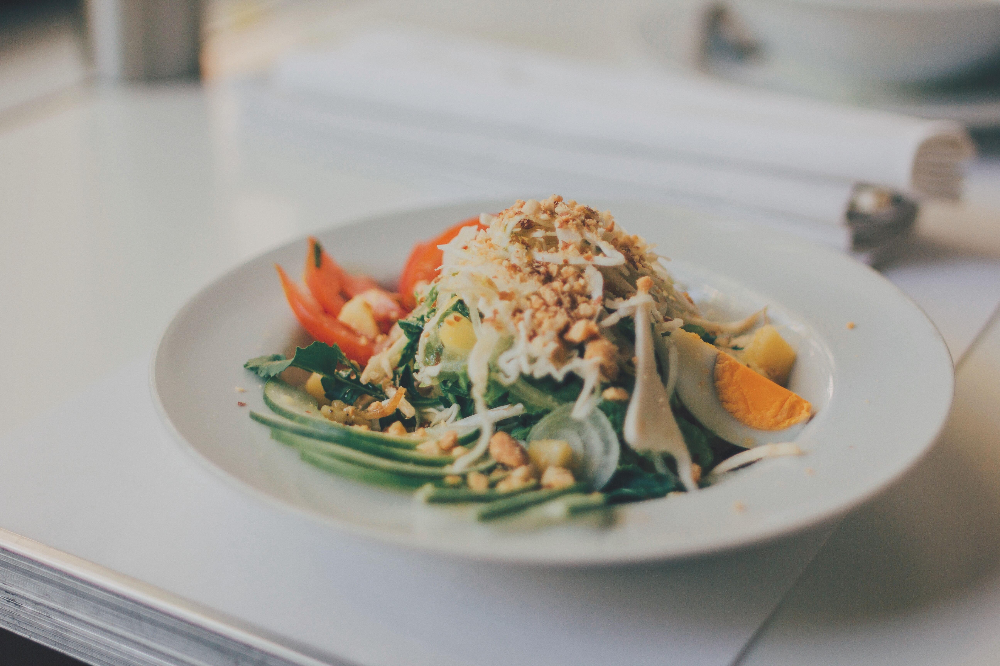

Cursos Culinária Francesa

O Curso de Culinária Francesa, da categoria Culinária, Gastronomia e Confeitaria, apresenta várias técnicas gastronômicas e elaborar pratos requintados, saborosos e muito elegantes como por exemplo o crêpe suzette, magrets de pato, carrê de porco com batatas, picanha com ratatouille, bife bourguignon dentre outros.
O que você vai aprender
- Aula 1. Salada de contra filé, laranja e endívias
- Aula 2. Creme Vichyssoise
- Aula 3. Aspargos a vinagrete
- Aula 4. Sopa de cebola caramelizada
Nossos alunos